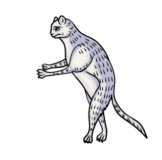
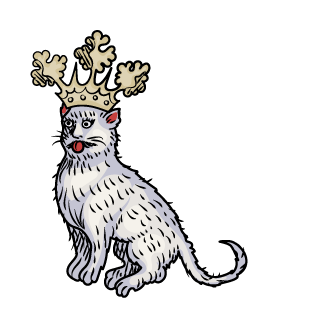
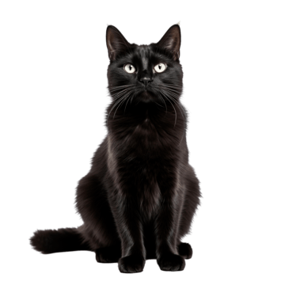

In nomine Catus, Filius et Spiritu Sanctiiii

En esta época, perdimos el prestigio que alguna vez tuvimos. La Iglesia enseñaba que estábamos relacionados con la oscuridad y lo demoníaco, con la intención de borrar y desacreditar los antiguos rituales y creencias paganas.

Los historiadores sospechan que la Peste Bubónica se esparció con rapidez ya que la Iglesia impulsó nuestra matanza. Podríamos haber cazado a las ratas que los hacían morir, pero ni modo, humanos tercos...

Los gatos negros, en particular, sufrieron del estigma de ser demoniacos y compañeros de las brujas. Yo que soy calicó, ¿tendré parte de diablo? JEJE >:)
volver a inicio Continuar el recorrido